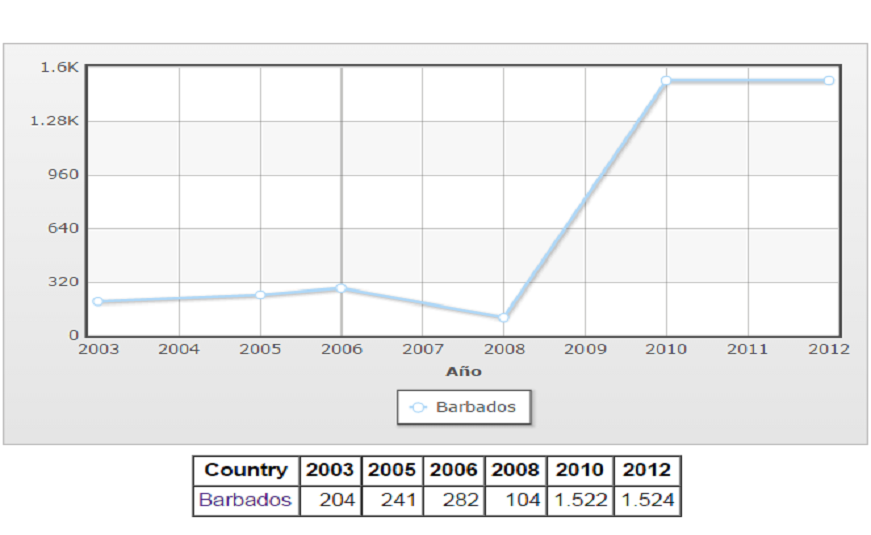
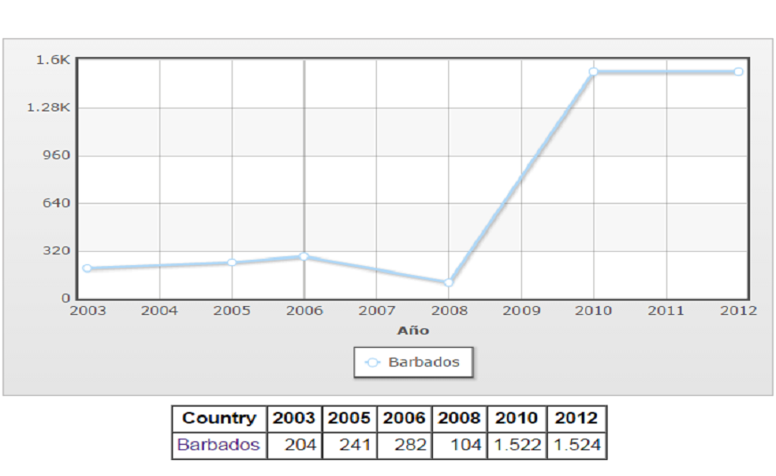

BARBADOS

ESTADÍSTICAS
SUSCRIPTORES A LINEA MÓVIL SUSCRIPTORES A LINEA FIJA


NÚMERO DE SERVIDORES INTERNET USUARIOS DE INTERNET

Fuente: IndexMundi (2008-2012)
ENTIDAD REGULADORA


BARBADOS
SUSCRIPTORES A LINEA MÓVIL SUSCRIPTORES A LINEA FIJA
NÚMERO DE SERVIDORES INTERNET USUARIOS DE INTERNET

Fuente: IndexMundi (2008-2012)